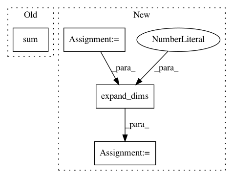

a15f84b2b3ce0a8be7b57db42b048edba8b27e81,art/attacks/virtual_adversarial.py,VirtualAdversarialMethod,_normalize,#Any#,121
Before Change
tol = 1e-10
inverse = (np.sum(x ** 2, axis=1) + tol) ** -.5
x = x * inverse[:, None]
return x
After Change
:return: The normalized version of `x`.
:rtype: `np.ndarray`
norm = np.atleast_1d(np.linalg.norm(x, axis=1))
norm[norm == 0] = 1
normalized_x = x / np.expand_dims(norm, axis=1)
return normalized_x
// @staticmethod
In pattern: SUPERPATTERN
Frequency: 3
Non-data size: 4
Instances
Project Name: IBM/adversarial-robustness-toolbox
Commit Name: a15f84b2b3ce0a8be7b57db42b048edba8b27e81
Time: 2019-09-09
Author: irinutza.n@gmail.com
File Name: art/attacks/virtual_adversarial.py
Class Name: VirtualAdversarialMethod
Method Name: _normalize
Project Name: scikit-learn-contrib/DESlib
Commit Name: 4abda80dd12518e6bfdc44d067566a3e6947e906
Time: 2018-03-28
Author: rafaelmenelau@gmail.com
File Name: deslib/dcs/a_priori.py
Class Name: APriori
Method Name: estimate_competence
Project Name: tensorflow/transform
Commit Name: 7ff2218b4af749860c6c44136e3a524c5c07b46e
Time: 2018-07-24
Author: tf-transform-dev@google.com
File Name: tensorflow_transform/analyzers.py
Class Name:
Method Name: size